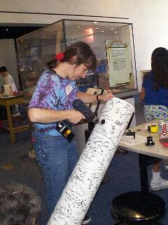

SJAA
Ephemeris
|
SJAA Ephemeris |
Recipe for a Telescope - Astronomy Day at The TechJane Houston |
Take one six inch pyrex mirror and one six inch glass tool. Sandwich a generous sprinkle of silicon carbide between the two. Wet slightly. Stir vigorously for 7 hours. From time to time, check the pyrex and shake on some more abrasive. Once an hour, prepare a warm water bath for the mirror. Decrease size of abrasive each hour, changing to aluminum oxide powders until a smooth and pit free curve is obtained. Take care to keep the two pieces of glass from sticking. If this happens, beat them apart with a wooden or rubber mallet.
This was the beginning of a recipe for Astronomy Day, prepared and served with relish by members of the SJAA at the Tech Museum of Innovation in San Jose a few weeks ago. What a way to honor Astronomy day, and what a treat for the members and guests of the Tech Museum! Several members of the SJAA were on hand to distribute copies of The Ephemeris, and to answer questions about the telescopes on display, the SJAA or about astronomy in general. A better group of Astronomy Day astro-ambassadors could not be found anywhere.
After a full day of grinding the curve, switching the grinders every few minutes, the intrepid telescope makers of the SJAA descended upon the general meeting at Houge Park to proudly show off the fruit of their labors. A spherical F7 curve on a pyrex round was now waiting for its next transformation. Wafting from out behind the Houge Park back door was the aromatic smell of hot gum from a pine tree. Pine-tar pitch, the color of golden brown sugar and the consistency of honey was about to be magically transformed into a plate of butterscotch candy facets. Quickly, the pitch lap was pressed onto the awaiting glass tool. Just as quick, the mirror's curve was pressed into the candy-like pitch lap. The mirror and tool were now left, curves together overnight in a cool dark place.
Bright and early on Sunday morning we were all back at the Tech. The curve we had created by digging away the glass surface of the mirror with abrasives would now be smoothed to a shiny and hopefully parabolic shape with a paste of oxide of the rare earth cerium mixed with water to lubricate the mirror and pitch lap.
During these two days nearly 200 visitors took a turn grinding and polishing our mirror. And every one of them signed the awaiting cardboard tube, destined for the newest addition to the SJAA telescope loaner program.
While grinding and polishing was going on at one table, another group of SJAA members were busily explaining the cut out tube and mount pieces to the many visitors. Looking like huge gingerbread cookie pieces, the cutouts awaited their turn in the spotlight. Soon power drills whizzed, and within an hour the mount was constructed. The tube, mirror cell and spider/with diagonal mirror were inserted in the waiting tube.
Our emotions were high as we aimed the tube out the far window to catch a glimpse of roof tile, and align the optics. It was so brilliantly clear it took our breath away! We could see the cracks on the tile!
Next, the "signature scope" was taken out on the Tech balcony and aimed accross to the pristine white domes atop Mount Hamilton. Lick Observatory was destined to be our first real view through the telescope. Above Lick, the first quarter moon shone brightly in the afternoon light. This is what Astronomy Day is all about, showing the first quarter moon to those who wish to see. Sharing the universe in many and diverse ways. As we each took our turn and saw first light through our two day telescope, and through an inexpensive 25mm Kellner eyepiece, the same eyepiece several of us used for our own very first tentative looks at the universe so many years ago, we gasped in amazement! "Clavius! I see Clavius!", marvelled Bill Arnett. High-fives and hugs were shared. Then we knelt at the eyepiece and all took a turn as we looked though our new time machine, autographed by countless new telescope makers-for-the-day in San Jose, California.
Loaner telescope number 32, dubbed the "Signature" scope, our astronomy day telescope will be a humble addition to the impressive SJAA loaner program. But it will always be a favorite to those of us who touched it and transformed it from a pile of wood and metal, cardboard and glass over a two day astronomy day weekend.
For those of you with internet access, the SJAA website has a great pictoral essay depicting our days at the Tech Musum. Take a look at http://www.seds.org/billa/sjaa/aday99/aday.html and see if you don't agree - this was one heck of a great recipe for astronomy day.
Bill Arnett summed it up so well. "But by golly, you really can make a working telescope in 14 hours! John Dobson ought to be proud."
|  |
| Jane Houston; last updated: February 05, 2002 | Prev Next |